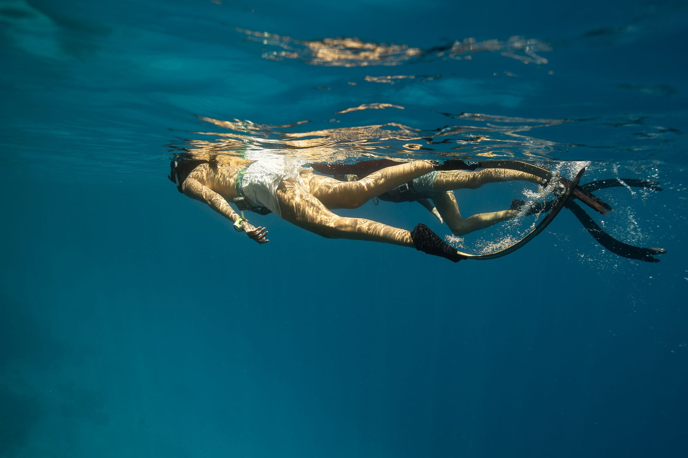
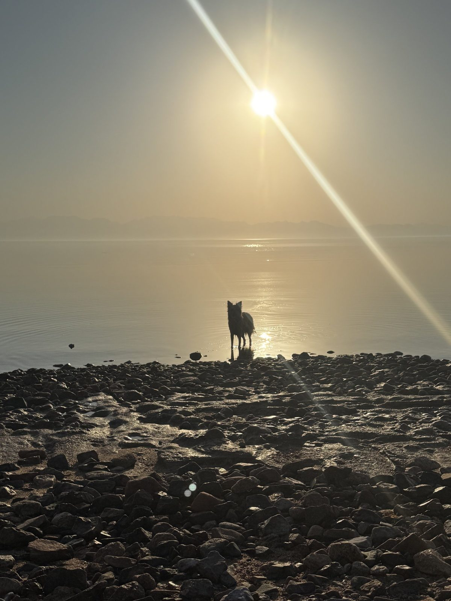
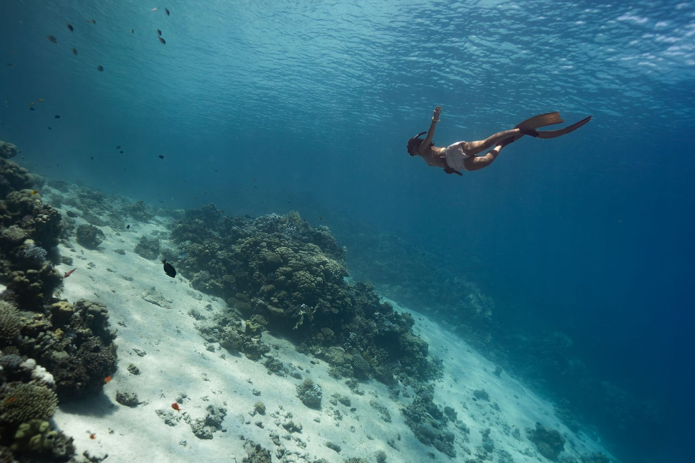
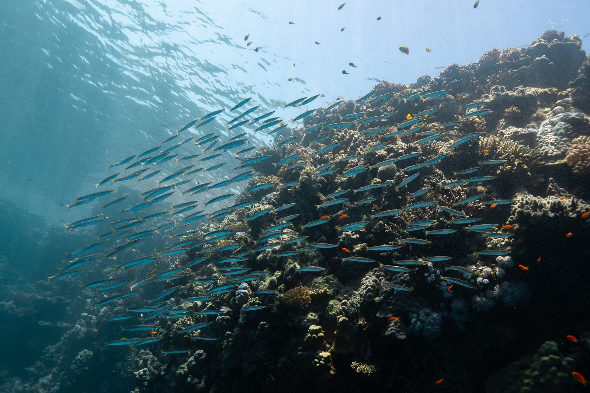
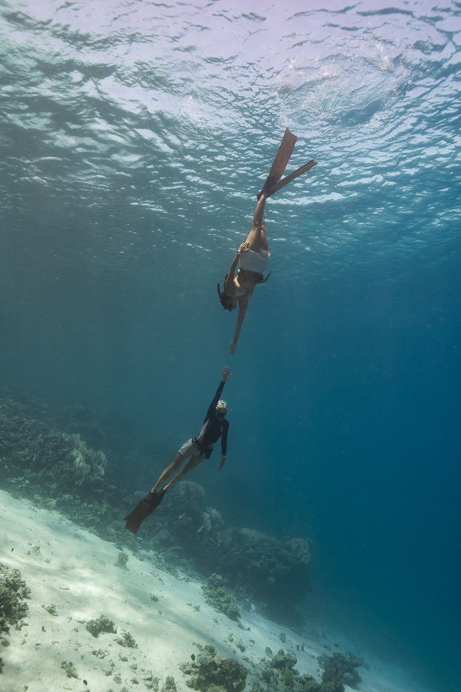

Freediving w Dahab — kursy i treningi
Dahab to świetne miejsce, żeby zacząć przygodę z freedivingiem. Czeka tu na Ciebie ciepłe Morze Czerwone, piękne miejsca nurkowe i luźna atmosfera, dzięki której łatwiej skupić się na sobie i nauce. Od spokojnej zatoki Lighthouse po słynne Blue Hole — każde miejsce daje inne możliwości.
Więcej o mnie →- — Małe grupy — maksymalnie 3 osoby na instruktora
- — Spokojna, wspierająca atmosfera bez niepotrzebnej presji
- — Ćwiczenia oddechowe i uważności wspierające freediving
- — Indywidualne podejście dopasowane do Twojego doświadczenia i celów
- — Piękne miejsca treningowe w Dahab
- — Kursy dostępne po polsku i angielsku



Jak możemy pracować razem?
Kursy
Kursy SSI dla osób początkujących i bardziej zaawansowanych. Nauczysz się techniki, zasad bezpieczeństwa i tego, jak zachować spokój pod wodą — bez pośpiechu i we własnym tempie.
Zobacz kursy →Trening
Masz już certyfikat? Możemy popracować nad techniką, wyrównywaniem ciśnienia i głębokością albo po prostu zaplanować dobry, bezpieczny trening w wodzie.
Zobacz treningi →Joga i medytacja
Joga, oddech i medytacja pomagają zwolnić, lepiej poczuć ciało i znaleźć więcej spokoju — zarówno w wodzie, jak i poza nią.

Kobiety Morza
Kameralny tydzień w Dahab dla kobiet, które chcą połączyć freediving, jogę i świadomą pracę z oddechem. Bez presji i rywalizacji — za to z czasem na morze, odpoczynek i bycie razem.
Dowiedz się więcej